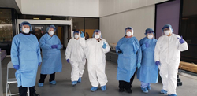
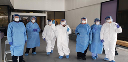
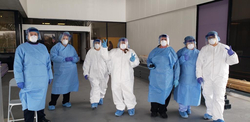

Luv Amin
Biology Major
I am currently a student pursing a medical career. Currently, I am involved in many different organizations and extra curricular activities to gain experience for a career in medicine. I am as a student leader and love to represent the students at my school, from helping them succeed or even representing their voice on campus, I like to make sure I can do the best for them. I am also a tutor students in many different subjects like Math, Chemistry, and Biology in order to give back knowledge to the campus community. I am very successful in my college classes and also take part in multiple tasks at the same time. I am also taking part in a research lab where we perform many different experiments and analyze data. Once data has been formulated and enough conclusions can be drawn we construct a research paper and send it out to be published in many different journals.
Aside from research, I also volunteer in a hospital. Hospital volunteering gives you insight on the patient care aspect of science and medicine, something you cannot find in a research lab. Here I interact with many different patients and hospital staff, each with their own problems and goals. I is amazing to be part of a team to better the health of our community. At the hospital, I have seen and learned a lot about the human application of sciences.
Whatever you learn in class can be applied in real time when it comes to a hospital setting therefore I find volunteering there very useful. Finally, I like to spend my time outdoors as much as possible. I love going camping and hiking to see what nature has to offer. The world is full of many different wonders and my goal is to see al of the amazing things nature has to offer. I have been to many different national parks around California, Utah, and Arizona and my goal is to go to every single national park in America. I have had many different encounters with animals, especially bears and I live the beauty of interacting with other organisms and see how they behave as well. Overall, this is a summary of my interests and hobbies as an individual.
Experience
Researcher
• Performed various laboratory techniques
• Did various presenations regarding my topic
• Successfully published a research paper
Supplemental Instructor
• Instructed small classes of Math, Biology, and Chemistry
• Constructed weekly lesson plans for students
Hospital Volunteer
• Learned various patient care techniques
• Made connections with profressional hospital staff
• Watched surgeries
• Did over 200 hours of service
Education
UC Riverside
Portfolio
 



